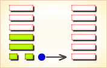
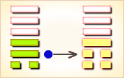
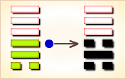
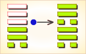
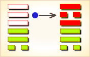
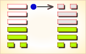

周易第44卦_姤卦(天风姤)_乾上巽下
如有疑问互相交流，微信：470283584
周易第44卦详解
姤卦原文
姤。女壮，勿用取女。
象曰：天下有风，姤。后以施命诰四方。
白话文解释
姤卦：梦见女子受伤。筮遇此卦，不利于娶女。
《象辞》说：本卦上卦为乾，乾为天；下卦为巽，巽为风，可见天下有风，是姤卦的卦象，君王观此卦象，从而效法于风之吹拂万物，施教化于天下，昭告四方。
《断易天机》解
姤卦乾上巽下，一阴五阳，为乾宫初世卦。姤卦以阴遇阳，以柔乘刚，含有不期而遇之意，但不宜娶女。遇此卦适宜谋事，如果遇火，还会有喜事。
北宋易学家邵雍解
阴长阳消，鸿运中衰；诸多阻滞，谨慎以防。
得此卦者，阴长阳衰，诸事不顺，宜谨慎行事，更应注意桃色纠纷。
台湾国学大儒傅佩荣解
时运：正当好运，名扬四海。
财运：到了远方，自可获利。
家宅：小心狂风；婚姻得正。
身体：小心中风。
传统解卦
这个卦是异卦（下巽上乾）相叠。乾为天，巽为风。天下有风，吹遍大地，阴阳交合，万物茂盛。姤（gǒu）卦与夬卦相反，互为“综卦”。姤即媾，阴阳相遇。但五阳一阴，不能长久相处。
大象：风无孔不入，所吹到之处，暴露其间之物体，无一不与之相遇，为邂逅之意。
运势：阴长阳消，注意桃色纠纷，诸事阻滞，宜慎重行事。
事业：合时宜，循时序。但潜在着危机，阴阳不协调。务必依附于强者，多方联系，增强势力，防止小人渔利，争取形势好转。诸事宜及早准备，等待时机，一旦成熟立刻行动。
经商：市场正从红火的状态走向衰危，及早脱身为妙，强行发展有危险。无正直的人相助，却有小人在暗中盘算。对此，务必保持清醒的头脑，寻求可靠的合作伙伴，隐忍待时，以图商业活动的再发展。
求名：性格不很合群，内心自视过高，不免处于困境而不得志。应投靠真诚正直的人，在其支持下成功。
婚恋：严格考察对方的道德品质，避免陷入“三角”纠纷。夫妻以诚相待，可转危为安。
决策：吉利。可在有利的环境中顺利发展，但决不可冒险行事，以免适得其反。其次在于随时提防身边小人的陷害。为此，在邪恶未成势之前即应制止，宁可孤立也不可与小人结伴。
台湾张铭仁解卦
姤：表示邂逅、不其而遇，非预想中的事情来发生。主是个状况卦，吉凶未定。逅，会带来意外之喜、也会带来意外之灾，需视动爻变卦吉凶来论断。 而「姤」意，卜感情通常是有其他的感情发生的迹象、与情色非常有关系。
解释：二女争一男。
特性：杞人忧天，虎头蛇尾，易感伤，有艺术美学之天分，较理想化。
运势：阴长阳衰，男人谨防因色受祸，诸事不如意，不能上进，沉于女色之凶象也。凡事进取宜慎重。
家运：家运渐衰，不祥之兆。有女人口舌，亦有感情之因，损财之运。
疾病：病情重，有恶化情况，注意泌尿生殖系统、胸肺科病。
胎孕：孕无碍。然须注意子女均有品性不良之趋向。
子女：子女多有志行不坚定，给父母亲增加麻烦，不幸之象，难管教也。
周转：有意外阻挠，难调，另谋他法为宜。
买卖：不能如意，受奸诈之害而导致失败也。
等人：女方会来，男方不一定会来，因为途中遇到别的女人之故。
寻人：会在意想不到的地方相遇。寻人不易，西北方。
失物：尽快寻找，可失而得。失物似被重重物件压在最底部。
外出：有困难，虽无大灾祸，但无人相助。
考试：不理想。
诉讼：提防桃色纠纷，是非谣言拨弄。
求事：难成。
改行：不利。
开业：不宜，强行必受小人之害。
周易第44卦初六爻详解
初六爻辞
初六。系于金柅，贞吉。有攸往，见凶。羸豕孚蹢躅。
象曰：系于金柅，柔道牵也。
白话文解释
初六：细柔之线牵附于黄铜柅子之上。这是吉利的贞兆。若占问有所往，则必逢凶险，就象瘦弱的猪被不情愿地拖回来。
《象辞》说：细柔之线牵附于黄铜柅子上，是说柔物被牵制于刚物，以像柔弱者依附于刚强者，则获吉利。
北宋易学家邵雍解
平：得此爻者，或遇贵人好友提携而发财，女人有生育之喜。不良者，须防疾诉忧患，或女人有不贞之事。做官的有被贬职之忧。
台湾国学大儒傅佩荣解
时运：守成尚可，不宜妄动。
财运：适宜开店，不利行商。
家宅：维护家声；男外女内。
身体：虚弱静养。
初六变卦

初六爻动变得周易第1卦：乾为天。这个卦是同卦（下乾上乾）相叠。象征天，喻龙（德才的君子），又象征纯粹的阳和健，表明兴盛强健。乾卦是根据万物变通的道理，以“元、亨、利、贞”为卦辞，表示吉祥如意，教导人遵守天道的德行。
周易第44卦九二爻详解
九二爻辞
九二。包有鱼，无咎，不利宾。
象曰：包有鱼，义不及宾也。
白话文解释
九二：厨中有鱼。占得此爻，没有灾祸，但不利宴请宾客。
《象辞》说：厨中有鱼，有鱼无肉，乃小康之象，不宜大肆宴请宾客。
北宋易学家邵雍解
平：得此爻者，有财运，妇人则有怀孕之喜。做官的晋升有望。
台湾国学大儒傅佩荣解
时运：远避小人，自然有利。
财运：货物充足，利在手中。
家宅：女子主持；婚姻可成。
身体：池鱼之殃。
九二变卦

九二爻动变得周易第33卦：天山遁。这个卦是异卦（下艮上乾）相叠。乾为天，艮为山。天下有山，山高天退。阴长阳消，小人得势，君子退隐，明哲保身，伺机救天下。
周易第44卦九三爻详解
九三爻辞
九三。臀无肤，其行次且。厉，无大咎。
象曰：其行次且，行未牵也。
白话文解释
九三：臀部负伤，行走困难。占得此爻，有危险，但尚无大的灾难。
《象辞》说：行走困难，因为没有人扶持。
北宋易学家邵雍解
凶：得此爻者，多灾难。做官的会退步，或者被贬。
台湾国学大儒傅佩荣解
时运：因疑生危，稍安毋躁。
财运：犹豫不决，怎能获利。
家宅：修整家宅；迟缓可成。
身体：坐立不安，求医诊治。
九三变卦

九三爻动变得周易第6卦：天水讼。这个卦是异卦（下坎上乾）相叠。同需卦相反，互为“综卦”。乾为刚健，坎为险陷。刚与险，健与险，彼此反对，定生争讼。争讼非善事，务必慎重戒惧。
周易第44卦九四爻详解
九四爻辞
九四。包无鱼，起凶。
象曰：无鱼之凶，远民也。
白话文解释
九四：厨中无鱼。筮遇此爻，有所动作必遭凶险。
《象辞》说：厨中无鱼之爻，显示其人必遭凶险。因为九四阳爻而居阴位，像君王失其权位，脱离民众。
北宋易学家邵雍解
凶：得此爻者，多是非之扰，年老者不利于寿。做官的有损，多难。
台湾国学大儒傅佩荣解
时运：未得正运，开拓心胸。
财运：袋中无粮，无利可图。
家宅：僻处防灾；可能无后。
身体：虚火难治，极为凶险。
九四变卦

九四爻动变得周易第57卦：巽为风。这个卦是同卦（下巽上巽）相叠，巽为风，两风相重，长风不绝，无孔不入，巽亦为顺、谦逊的态度和行为，可无往不利。
周易第44卦九五爻详解
九五爻辞
九五。以杞包瓜，含章，有陨自天。
象曰：九五含章，中正也；有陨自天，志不舍命也。
白话文解释
九五：匏瓜缠着杞树生长，隐印的瓜纹很好看。忽然从头顶上方掉下一个瓜来。
《象辞》说：九五爻辞讲的隐含文彩，即指九五之爻居上卦中位，像人秉含中正之德。自天上殒落，说明高尚的志行不得施行，故舍命而殉志。
北宋易学家邵雍解
平：得此爻者，会遇到贵人提携，有意外之喜，妇人有怀孕之喜。做官的会为栋梁之才。
台湾国学大儒傅佩荣解
时运：心胸开阔，功名自显。
财运：木类产品，应有大利。
家宅：中正之居；婚姻有吉。
身体：热中带寒，速求良医。
九五变卦

九五爻动变得周易第50卦：火风鼎。这个卦是异卦（下巽上离）相叠。燃木煮食，化生为熟，除旧布新的意思。鼎为重宝大器，三足稳重之象。煮食，喻食物充足，不再有困难和困扰。在此基础上宜变革，发展事业。
周易第44卦上九爻详解
上九爻辞
上九。姤其角，吝，无咎。
象曰：姤其角，上穷吝也。
白话文解释
上九：遭遇野兽，处于它的角锋之下，不是好兆头，但没有大的灾难。
《象辞》说：遭遇野兽，处于它的角锋之下，因为上九阳爻居一卦之尽头，像人处于穷困之境地。
北宋易学家邵雍解
凶：得此爻者，营谋艰辛，孤立无助。做官的功名大显，但好运将尽。读书人努力进取者能取得佳绩。
台湾国学大儒傅佩荣解
时运：功名大显，运已近穷。
财运：仔细计较，获利甚丰。
家宅：谨防屋角；老少夫妻。
身体：头部有疾，就医可治。
上九变卦

上九爻动变得周易第28卦：泽风大过。这个卦是异卦（下巽上兑）相叠。兑为泽、为悦，巽为木、为顺，泽水淹舟，遂成大错。阴阳爻相反，阳大阴小，行动非常，有过度形象，内刚外柔。